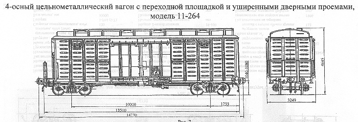

Назначение: для перевозки штучных, зерновых и других грузов широкой номенклатуры требующих защиты от атмосферных осадков
Параметры
| Номер проекта | 264.00.000.00 |
| Технические условия | ТУ24.05.802-86 |
| Модель вагона | 11-264 |
| Тип вагона | 207 |
| Изготовитель | АВЗ |
| Грузоподъемность, т | 68 |
| Масса тары вагона, т | 25 |
| Нагрузка: статическая осевая, кН(тс) |
228(23,25) |
| погонная, кН/м(тс/м) | 61,87(6,31) |
| Скорость конструкционная, км/ч | 120 |
| Габарит | 1-ВМ(0-Т) |
| База вагона, мм | 10000 |
| Длина, мм: по осям сцепления автосцепок |
14730 |
| по концевым балкам рамы (длина рамы) | 13510 |
| Ширина максимальная, мм | 3249 |
| Высота от уровня верха головок рельсов, мм: максимальная |
4645 |
| до уровня пола | 1285 |
| Количество осей, шт. | 4 |
| Модель 2-осной тележки | 18-100 |
| Наличие переходной площадки | есть |
| Наличие переходной площадки с ручным тормозом | нет |
| Наличие стояночного тормоза | есть |
| Длина кузова внутри, мм | 13082 |
| Ширина кузова внутри, мм | 2764 |
| Высота кузова по боковой стене, мм | 2791 |
| Размер в свету, мм: дверного проема |
3794х2343 |
| загрузочного люка в боковой стене | 614х365 |
| загрузочного люка в крыше | Ø400 |
| Объем кузова, м³: до уровня люков |
81 |
| полный с учетом объема крыши | 114 |
| Год постановки на серийное производство или закупки вагона | 1986 |
| Возможность установки буфера | есть |